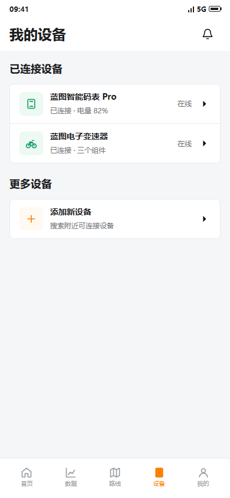
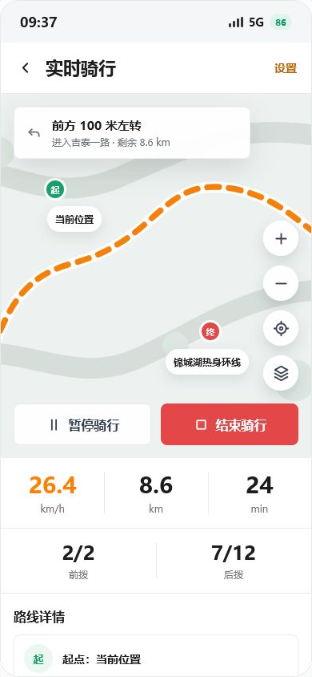
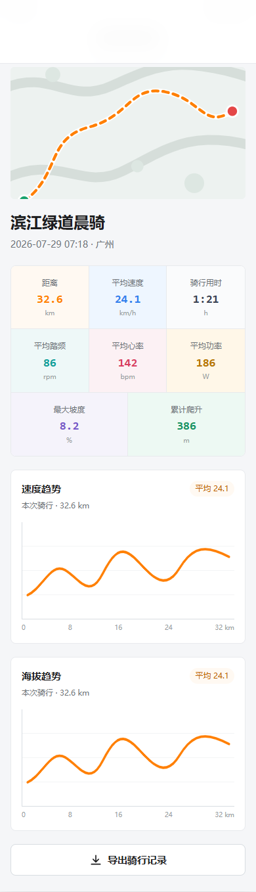
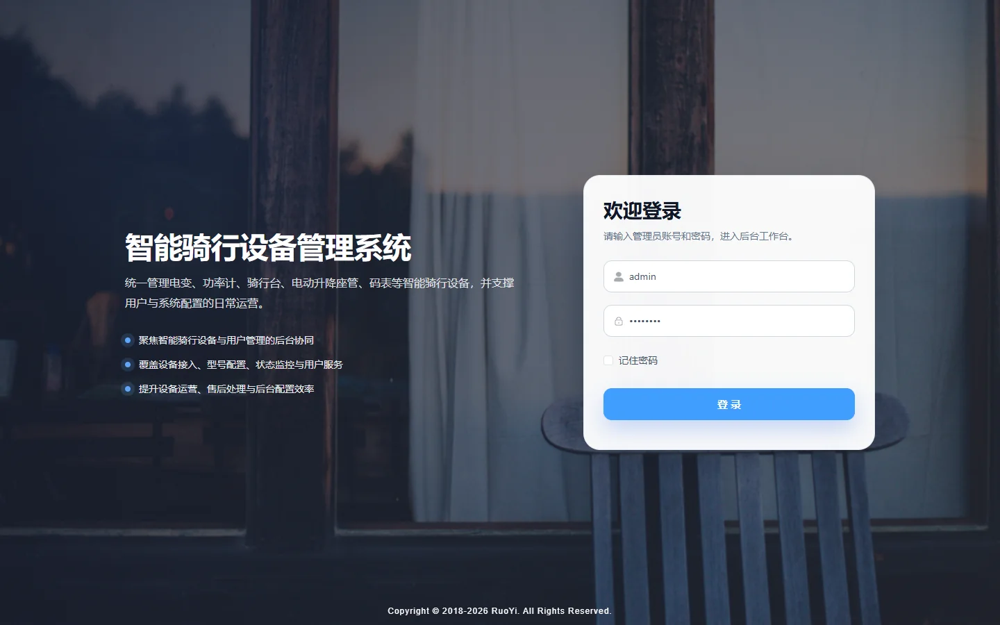

01 一次骑行
三个阶段，各有一个最重要的问题
骑行前要确认能不能出发，骑行中要快速看懂当前状态，骑行后要理解这次骑行结果。我据此安排车辆、设备、路线和数据的出现时机。
02 设计起点
硬件提供数据，页面决定用户何时看到
智能车辆和骑行设备会产生连接、电量、速度、路线和固件等信息。我的重点不是把这些能力全部展示出来，而是判断它们应当出现在出发前、骑行中还是结束后。
03 三个阶段
信息优先级随用户状态变化
- 骑行前：连接、电量和路线会决定能否出发
- 骑行中：速度、路线与进度必须能够快速扫视
- 骑行后：路线和过程数据需要进入同一份记录
- 设备参数与固件升级放在非骑行状态处理
04 我的职责
重点处理一次骑行里的任务和信息顺序
- 梳理骑行前、中、后的用户任务与信息优先级
- 规划首页、骑行、路线、记录和设备管理导航
- 设计码表、电子变速器等设备的连接与准备流程
- 组织路线保存、码表下发和骑行中数据层级
- 定义暂停、结束、记录回顾与设备设置路径
- 完成移动端交互方案，并验证 Demo 核心体验
05 三阶段方案
每个阶段只保留当前任务需要的信息
骑行前 · 能不能出发
确认设备、车辆、路线和开始条件，异常时先处理再出发。
骑行中 · 能不能快速看懂
优先展示路线、速度、进度和必要控制，降低扫视成本。
骑行后 · 能不能理解结果
展开本次路线、过程数据与骑行记录，支持回看。
06 骑行路径
准备完成后，界面才进入骑行状态
- 添加车辆或绑定骑行设备
- 确认蓝牙连接、设备身份与电量
- 查看车辆状态并选择路线
- 将已保存路线下发到在线码表
- 开始骑行并查看速度、路线与进度
- 断连或偏航时给出明确反馈
- 结束后保存路线与骑行记录
07 真实页面
骑行前、中、后分别证明一种信息优先级
以下为项目真实 Demo 页面，截图中的设备、电量、速度、距离和路线等数据均为演示数据，不代表真实骑行结果。

确认车辆、码表和电子变速器是否支持出发。
我的设计重点连接与电量等阻塞条件前置，异常直接指向处理动作。

在运动中快速读取路线、速度与骑行进度。
我的设计重点只保留必要数据和暂停、结束操作，减少视线停留时间。

理解本次路线、距离、时长和速度结果。
我的设计重点详细数据在结束后展开，不干扰骑行中的核心任务。

08 我的一个关键取舍
骑行中，信息读取成本比功能完整度更重要
用户处于移动状态时，我只保留路线、速度、进度与必要控制；设备管理、参数和 OTA 放到出发前或骑行结束后处理。
09 当前 Demo
验证设备准备、实时骑行和结果回顾
移动端呈现车辆与设备绑定、路线规划和下发、实时骑行以及骑行记录；管理端补充设备台账和运营信息。当前成果用于验证产品结构、硬件交互和信息优先级，尚未接入的真实硬件能力不作为上线结果描述。
10 如果重新推进
我会把原型带到真实骑行环境中验证
重点观察用户查看路线和速度需要多长时间，并提前覆盖断连、偏航和固件中断后的恢复路径。静态页面能说明信息层级，但真实运动状态才能验证扫视成本。